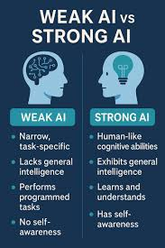

Tipos de Inteligencia Artificial
- Introducción
- IA debil o estrecha
- IA fuerte o general
- Superinteligencia artificial
- Tipos de IA según su funcionamiento
Introducción
La inteligencia artificial no es una única tecnología, sino que existen diferentes tipos de IA según sus capacidades y la forma en la que funcionan. Algunas inteligencias artificiales están diseñadas para realizar tareas muy concretas, mientras que otras buscan imitar de manera más completa la inteligencia humana.
Actualmente, la mayoría de las IA que utilizamos pertenecen a tipos bastante limitados, aunque los científicos continúan investigando para desarrollar sistemas cada vez más avanzados.

IA débil o estrecha
La IA débil, también llamada IA estrecha, es el tipo de inteligencia artificial más común en la actualidad. Se trata de sistemas diseñados para realizar una tarea específica de manera eficiente, pero que no pueden actuar fuera de esa función.
Por ejemplo, asistentes virtuales como Siri o sistemas de recomendación utilizados por plataformas como Netflix funcionan gracias a este tipo de inteligencia artificial.
Aunque estas IA pueden parecer muy inteligentes, en realidad solo trabajan dentro de los límites para los que han sido programadas.
Características principales
Realiza tareas concretas.
No posee conciencia ni razonamiento propio.
Es la IA más utilizada actualmente.
Se encuentra en móviles, redes sociales y aplicaciones digitales.
 volver al indice
volver al indice
IA fuerte o general
La IA fuerte, también
conocida como inteligencia artificial general, es una inteligencia capaz de realizar cualquier tarea intelectual igual que un ser humano. Este tipo de IA podría aprender, razonar, tomar decisiones y adaptarse a situaciones nuevas sin necesidad de ser programada específicamente para cada tarea.
Por el momento, este tipo de inteligencia artificial no existe realmente, aunque muchas empresas y científicos trabajan en investigaciones relacionadas con ella.
La IA general es uno de los objetivos más importantes de la informática y aparece frecuentemente en películas y novelas de ciencia ficción.
Superinteligencia artificial
La superinteligencia artificial sería un nivel todavía más avanzado. Se trataría de una IA capaz de superar ampliamente la inteligencia humana en prácticamente todos los ámbitos, incluyendo creatividad, razonamiento o resolución de problemas.
Actualmente, esta idea pertenece más al terreno teórico que a la realidad, pero muchos expertos debaten sobre los posibles beneficios y riesgos que podría tener en el futuro.
Algunos científicos creen que una superinteligencia podría ayudar a resolver problemas muy complejos, mientras que otros consideran que podría representar un peligro si no se controla adecuadamente.
Tipos de IA según su funcionamiento
Además de clasificarse por sus capacidades, las inteligencias artificiales también pueden dividirse según la forma en la que funcionan.
Máquinas reactivas
Son las IA más simples. Solo reaccionan ante determinadas situaciones y no tienen memoria ni capacidad de aprendizaje. Un ejemplo famoso fue Deep Blue, creado por IBM para jugar al ajedrez.
IA con memoria limitada
Este tipo de IA puede utilizar información del pasado para tomar decisiones. Es la más utilizada actualmente y se encuentra en vehículos autónomos, asistentes virtuales y sistemas de reconocimiento facial.
IA con teoría de la mente
Es una IA todavía en desarrollo que intentaría comprender emociones, pensamientos e intenciones humanas para interactuar de manera más natural con las personas.
IA autoconsciente
Sería el nivel más avanzado de inteligencia artificial. Estas máquinas tendrían conciencia propia y entenderían su existencia. Actualmente no existe ninguna IA de este tipo.